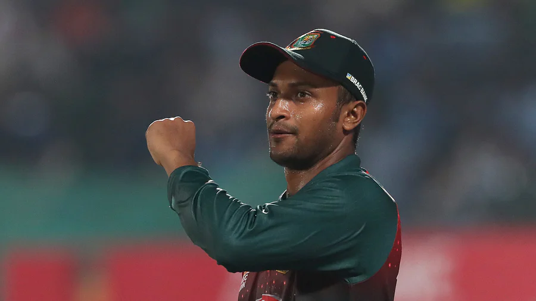

This is rakib
ক্রিকেট
বিসিবিতে সাকিবের চিঠি,
বেটউইনারের সঙ্গে বাতিল করছেন চুক্তি
Rakib bin Rashad
publishde in 11 Aguest 2022

সাকিব আল হাসান, ছবি: প্রথম আলো |
বিসিবি সভাপতি নাজমুল হাসানের সঙ্গে টেলিফোন আলাপে বেটউইনার নিউজের সঙ্গে সম্পর্কচ্ছেদের কথা মৌখিকভাবে জানিয়েছিলেন সাকিব আল হাসান।তারপরও বিসিবি অপেক্ষায় ছিল সাকিবের কাছ থেকে এ ব্যাপারে লিখিত প্রতিশ্রুতির। সাকিবের সেই চিঠি পাওয়া যায়নি বলে আজ দুপুরে বিসিবি সভাপতির অফিসে বোর্ডের নেতৃস্থানীয় পরিচালকদের সঙ্গে সভা শেষ হয়েছে কোনো সিদ্ধান্ত ছাড়াই। সেই সভা থেকে বেরিয়ে বিসিবি সভাপতি সাংবাদিকদের ব্রিফিং করার কিছুক্ষণ পরই সাকিব আল হাসানের সেই চিঠি পেয়েছে বিসিবি।বিসিবি সভাপতি সাকিবের চিঠি পাওয়ার কথা নিশ্চিত করে বলেছেন, ’হ্যাঁ, আমরা সাকিবের চিঠি পেয়েছি। চিঠিতে ও বেটউইনারের সঙ্গে চুক্তি থেকে সরে আসার কথা বলেছে।’
READ MORE